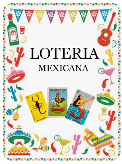
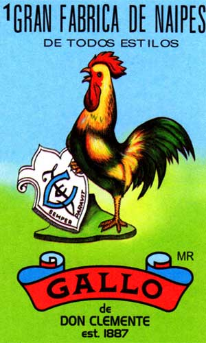

👆 Toca para sacar carta
Carta #1

🎙️ VERSO CANTADO
"¡Se va y se corre con la vieja del pozole! Toca la carta o el botón para comenzar."
Últimas cantadas en mesa:
Aquí irán saliendo las cartas cantadas...
🃏 Cartas Cantadas en Mesa (0)
Toca cualquier carta para escuchar en qué turno salió y revisar las tablas impresas
Aún no ha salido ninguna carta
Toca "Cantar Carta" o activa "Auto" abajo. Cada carta tradicional cantada irá apareciendo aquí en la mesa.